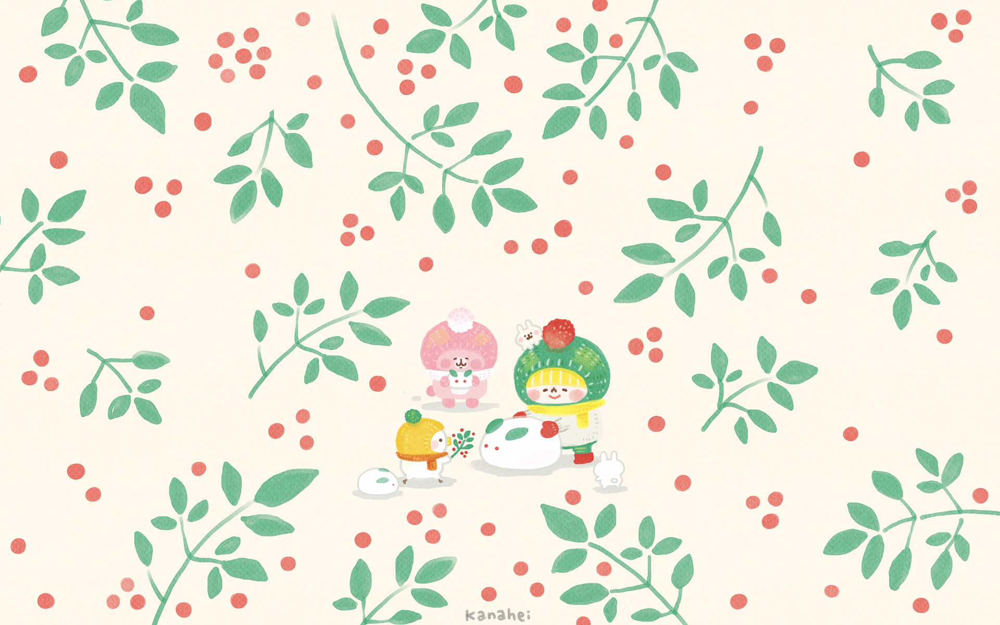

Who am i ?
Introduction
Hello everyone! Thank you for clicking into the introduction page! My name is Water Sky, and I currently a Sophormore in University of Washington Studying Psychology. I was born in a small city in the south of China called GuangZhou. I can speak Cantonese, Mandarin, English, Spanish and learning Japanese now.
Being the first person to come to the United State in my family, I have encountered a lot of difficulties, both in the physical and language aspects. But fortunately, I was able to meet many kind and friendly people, and received their helps. Learning English is definitely one of the biggest challenges in my life; however, I have bypass all of them and heading to the next level of my life!
I really like to draw, especially anime and cartoon characters! The above picture is created by my favorite arist - Kanahei. She is a Japanese illustrator who was seventeen years old when she started drawing digital pictures, uploading the creations onto her website and offering them for free down-load. My goal one day is to become an artist like her!